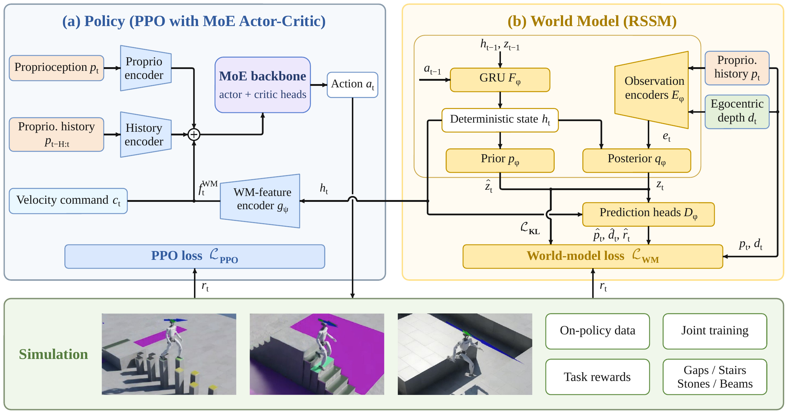

Baseline Comparisons
WM-LOCO is the only method whose mean success exceeds 90% on every terrain class.

Fig. 4 Success rates averaged across difficulty tiers. PPO achieves 0% success on gaps, stepping stones, and balance beams.
1D-Robotics 2Beijing University of Posts and Telecommunications 3Harbin Institute of Technology 4Soochow University
01

Foothold-constrained terrain limits feasible footholds to sparse, discontinuous, or narrow support regions, as in gaps, stepping stones, stairs, and balance beams. In such settings, a single misplaced step can cause a fall. Reliable traversal therefore requires precise foot placement and anticipation of upcoming terrain.
To address this challenge, we present World-Model-Augmented Visual Locomotion (WM-LOCO), which augments a visual locomotion policy with predictive context from a jointly trained world model. Given onboard depth observations and proprioception, a recurrent state-space model (RSSM) learns action-conditioned latent dynamics that predict future proprioceptive states, egocentric observations, and task rewards. The resulting recurrent feature is then fed into the proximal policy optimization (PPO) actor–critic, providing predictive context for anticipatory foot placement on foothold-constrained terrain.
WM-LOCO achieves average success rates of 96.0% on gaps, 96.9% on stepping stones, 94.0% on stairs, and 92.1% on balance beams, outperforming the evaluated baselines while improving gait efficiency and smoothness. Furthermore, WM-LOCO achieves zero-shot sim-to-real transfer to a Unitree G1, with 92.5% success across these four terrain classes.
02
The policy runs onboard a Unitree G1, using proprioception and a single Intel RealSense D435 depth stream, without additional tuning. Ten trials per terrain class: 37/40 successful (92.5%).
0.25 m stone tops, 0.45 m gaps
A 0.8 m gap between two platforms
3 m long, 0.10 m wide · front and side views
0.15 m risers, 0.25 m treads, up and down
03
Success rates in Isaac Lab across four terrain classes at Easy, Medium, and Hard difficulty.
| Terrain | Difficulty | PPO | GLAD | CReF | WM-LOCO | Real |
|---|---|---|---|---|---|---|
| Stairs | Easy | 87.0% | 95.3% | 95.0% | 94.2% | 90% |
| Medium | 91.4% | 88.7% | 91.3% | 95.7% | ||
| Hard | 91.3% | 60.3% | 64.7% | 92.0% | ||
| Mean | 89.9% | 81.4% | 83.7% | 94.0% | ||
| Gap | Easy | 0.0% | 98.0% | 93.7% | 98.0% | 90% |
| Medium | 0.0% | 99.0% | 78.3% | 100.0% | ||
| Hard | 0.0% | 78.7% | 0.0% | 90.0% | ||
| Mean | 0.0% | 91.9% | 57.3% | 96.0% | ||
| Stepping stones | Easy | 0.0% | 76.0% | 94.3% | 97.1% | 100% |
| Medium | 0.0% | 64.7% | 94.0% | 97.3% | ||
| Hard | 0.0% | 7.7% | 88.7% | 96.4% | ||
| Mean | 0.0% | 49.4% | 92.3% | 96.9% | ||
| Balance beam | Easy | 0.0% | 99.0% | 95.3% | 99.0% | 90% |
| Medium | 0.0% | 90.7% | 94.7% | 96.7% | ||
| Hard | 0.0% | 0.0% | 41.1% | 80.7% | ||
| Mean | 0.0% | 63.2% | 77.0% | 92.1% |
Table 1 Success rates (%) for four methods and four terrains. Mean is the arithmetic average of Easy, Medium, and Hard; bold denotes the best simulation result in each row. Real reports WM-LOCO hardware success at one fixed difficulty per terrain, over 10 trials per terrain class.
WM-LOCO is the only method whose mean success exceeds 90% on every terrain class.
Fig. 4 Success rates averaged across difficulty tiers. PPO achieves 0% success on gaps, stepping stones, and balance beams.
Removing the world model reduces gap success to 0% for every width from 0.4–0.5 m onward.

Fig. 5 Gap-traversal success of the full model and of variants without the world model, history encoder, or MoE.
One episode chaining all four terrain classes: 95.4% success in simulation.

Fig. 1(d) Stair ascent, stepping stones, a gap, a balance beam, and stair descent in one simulated episode.
Given recorded actions, the world model predicts 15 updates (1.5 s) ahead without future observations.

Fig. 3 Multi-step world-model predictions on stepping stones: (a) depth sequences; (b, c) depth and proprioceptive errors. Rollouts receive no future observations.
04
@misc{liu2026wmloco,
title = {World-Model-Augmented Visual Locomotion for
Humanoids on Foothold-Constrained Terrain},
author = {Liu, Yuxi and Han, Lijun and Wang, Ziming and
Zhang, Ao and Yang, Cong and Sui, Wei},
year = {2026},
eprint = {2609.02542},
archivePrefix = {arXiv},
primaryClass = {cs.RO}
}